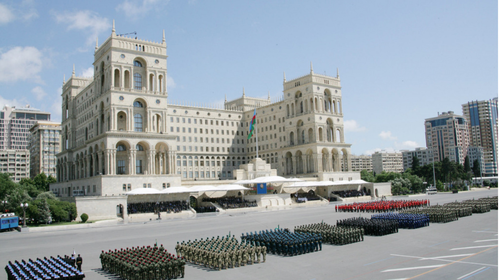

AZƏRBAYCANIN HƏRB TARİXİ
Qədim və mürəkkəb, keşməkeşli tarixə malik Azərbaycan xalqı əsrlər, minilliklər boyu öz azadlığı və dövlətçiliyi uğrunda mübarizə aparıb. Zəngin təbii sərvətlərə, əlverişli və strateji coğrafi-siyasi mövqeyinə görə vətənimiz daima güclü dövlətlərin təzyiqlərinə, hərbi təcavüzünə məruz qalıb. Bununla belə xalqımız öz mövcudluğunu qoruyub saxlaya bilib, ən qüdrətli düşmən ordularına qarşı mübarizədə hünər, qəhrəmanlıq nümunələri göstərib. Cavanşir, Babək, Şah İsmayıl Xətai kimi sərkərdə və dövlət xadimləri Azərbaycanın qəhrəmanlıq tarixinin bütöv bir salnaməsini yaradıblar. Bu kimi mərd sərkərdə və dövlət başçılarının şanlı ömür və fəaliyyət yolu xalqın vətən sevgisini, azadlıq və dövlətçilik hissini daha da gücləndirib, onu həyatımızın ən vacib, ən ümdə məqsədinə çevirib. Onların yaratdığı dəyərli ənənələr yüzilliklər boyu, o cümlədən ötən əsr ərzində uğurla davam etdirilib. 1918-ci ildə Çar Rusiyasının süqutundan sonra Şərqdə ilk demokratik respublika olan Azərbaycan Xalq Cümhuriyyəti yarandı. Cəmi 23 ay ömür sürməsinə baxmayaraq, Cümhuriyyət dövründə müstəqil dövlətin bütün atributları, o cümlədən milli ordumuz formalaşdırıldı. Həm ermənilərin, həm də bolşeviklərin işğalçılıq siyasətinə qarşı mübarizə aparmalı olan ADR hökuməti 1918-ci il iyunun 19-da gərgin vəziyyəti nəzərə alaraq bütün Azərbaycan ərazisində hərbi vəziyyət elan etdi. İyunun 26-da diviziya statusunda hərbi korpusun yaradılması barədə qərar qəbul olundu və Azərbaycanda milli ordunun təməli qoyuldu. 1918-1920-ci illərdə görkəmli generallarımız Səməd bəy Mehmandarov, Əliağa Şıxlinski və digər peşəkar hərbçilərimizin rəhbərliyi ilə Azərbaycanda yüksək döyüş qabiliyyətli, hərbi hazırlığa və intizama malik milli ordu hissələri formalaşdırıldı. Qeyd olunduğu kimi, 1918-ci il 26 iyun tarixli fərmanla Azərbaycan Milli Ordusunun yaradılmasına başlanıldı. Avqustun 1-də isə AXC-nin Hərbi Nazirliyi təsis edildi. İstedadlı general Səməd bəy Mehmandarov dekabrın 25-də hərbi nazir, general-leytenant Əliağa Şıxlinski isə nazir müavini təyin edildilər. Qısa müddət ərzində Milli Ordu Osmanlı dövlətinin Qafqaz İslam Ordusu ilə birlikdə Bakını və ətraf qəzaları erməni-bolşevik işğalından xilas etdi. Bu hərbi birləşmələr Muğanda və Əsgəranda milli hökumətə qarşı baş vermiş qiyamları yatırmaqda yüksək səriştəlilik göstərdi, Qazaxda Azərbaycan sərhəddini pozmuş erməni nizami ordu hissələrini darmadağın etdi. O zaman Azərbaycan ordusunun Hüseynxan Naxçıvanski, İbrahim ağa Usubov, Həmid Qaytabaşı, Kazım Qacar, Cavad bəy Şıxlinski, Həbib bəy Səlimov kimi istedadlı generalları var idi. Azərbaycan parlamentinin 1919-cu il avqustun 18-də keçirilmiş iclasında "Gömrüyə münasibətdə Azərbaycan Respublikasının Sərhəd Mühafizəsinin təsis edilməsi haqqında Qanun" qəbul edildi. 8 maddədən ibarət olan Qanunun 1-ci maddəsində göstərilirdi: "Azərbaycan Respublikasının sərhədlərini qeyri-leqal ticarətdən qorumaq və qaçaqmalçılıqla mubarizə aparmaq məqsədilə Azərbaycanın sərhədləri boyu, əlavə edilən dislokasiya məntəqələrinə uyğun olaraq, sayı doxsan doqquza (99) çatan, doqquz yüz doxsan iki (992) mühafizəçidən ibarət tərkibdə sərhəd postları təsis edilsin…" Təəssüf ki, Azərbaycanın bolşevik rus ordusu tərəfindən işğalından sonra müstəqilliyimizin ən mühüm atributu olan milli ordu hissələri ləğv edildi. Azərbaycan keçmiş İttifaqın tərkibində olduğu illərdə milli zabit korpusunun formalaşmasına, azərbaycanlıların yüksək hərbi vəzifələrə irəli çəkilməsinə Sovet rəhbərliyi tərəfindən daim süni maneə yaradılırdı ki, bu da məqsədli xarakter daşıyırdı. Lakin bütün bu maneələr Azərbaycan xalqının hərbi ənənələrini, döyüş ruhunu sarsıtmadı. 1939-1945-ci illərdə İkinci Dünya müharibəsinin gedişi, nəticələri bu həqiqəti bir daha təsdiqlədi. Azərbaycan xalqı öz zəngin hərbi-tarixi ənənələrinə sadiq qalaraq bu müharibədə də əsl şücaət, əzmkarlıq göstərdi. Həmin dövrdə Azərbaycan diviziyaları Qafqazdan Berlinədək şanlı döyüş yolu keçdi. İkinci Dünya müharibəsi cəbhələrində general Həzi Aslanov, Mehdi Hüseynzadə, Ziya Bünyadov, İsrafil Məmmədov, Gəray Əsədov, Məlik Məhərrəmov və başqa qəhrəman övladları əsl mərdik və şücaət nümunəsi göstərdilər. Onların qəhrəmanlığı sayəsində Azərbaycanın şanlı hərb tarixi ənənələri XX əsrdə də uğurla davam etdirildi.